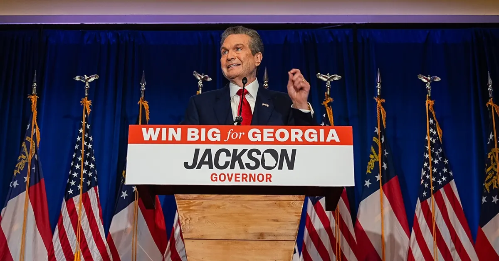
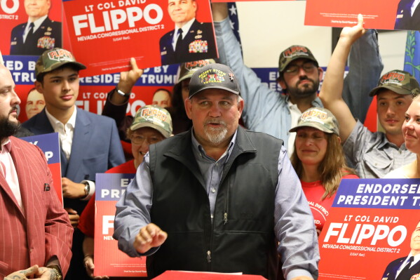
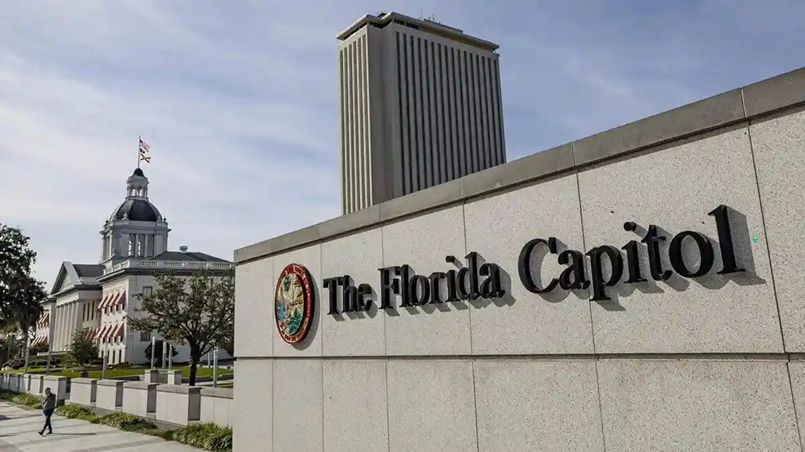

Jackson Wins Georgia Republican Governor Runoff, Secures Party Nomination



Jackson's win in Georgia's Republican gubernatorial runoff is a watershed moment in politics as the candidate is poised to become the Republican standard-bearer in the general election. The runoff brought an end to a competitive primary season that failed to produce a winner in the first round of voting. It was among the biggest state elections of the 2026 cycle, fueled by a highly engaged Republican base. Jackson sealed the GOP nomination after a closely watched campaign that drew heavy interest from party leaders, donors and voters across the state. Supporters celebrated the result as a sign that the campaign successfully united key segments of the party while appealing to voters concerned about the economy, public safety and state leadership.
Political analysts described the runoff as an important test of voter sentiment within Georgia's Republican electorate, particularly as the party prepares for a competitive statewide contest later this year.
Campaign Focused on Conservative Priorities
Throughout the runoff campaign, Jackson emphasized issues that resonated strongly with Republican voters across Georgia.
Economic growth, tax policy, public safety and education remained central themes during the race. The campaign argued that strong conservative leadership would be necessary to address challenges facing the state while maintaining Georgia's economic momentum.
The runoff also exposed divisions among parts of the Republican electorate as candidates vied for different factions of the party. Jackson was able to patch together enough support to win and move on to the general election.
Endorsements, fundraising and grass-roots organizing helped shape the outcome, observers said. The campaign's ability to mobilize voters in a low-turnout runoff was particularly important.
The results showed the importance of turnout, outreach in statewide races.
The General Election Race Takes Shape
With the Republican primary behind us, the attention quickly turned to the general election ahead.
Georgia remains one of the most closely watched political battlegrounds in the country and the governor's race has national implications. Each of the major parties view the state as strategically important due to its population growth, demographic shifts and recent history of competitive elections.
Political strategists say they expect to see big spending from campaigns, party organizations and outside groups in the months ahead. They also expect the volume of ads, voter outreach and fundraising to grow as candidates try to broaden their coalitions beyond their primary bases.
Issues such as economic development, housing affordability, healthcare, education and infrastructure are likely to dominate the general election conversation.
Analysts predict that independent voters and suburban communities could once again play a decisive role in determining the final outcome.
Georgia Remains a Key National Political Battleground
The governor's race is expected to attract attention well beyond Georgia because of the state's influence in national politics.
In recent election cycles, Georgia has become one of the most competitive states in the country, with both Republicans and Democrats investing heavily in statewide races. The outcome of the governor's contest is likely to be viewed as an important indicator of broader political trends heading into future national elections.
Party leaders on both sides believe the race will offer insight into voter priorities on economic issues, government performance and public policy. As a result, the campaign is expected to receive extensive media coverage and significant financial support.
Jackson's runoff victory concludes the Republican nomination battle, but it also marks the beginning of what is expected to be a long and closely contested general election campaign.
With Georgia once again positioned at the center of the national political landscape, the governor's race is likely to remain one of the most closely followed contests of the 2026 election cycle.
Reporting for this story drew on coverage from Politico, Axios, and NBC News.


Koepka’s Leap of Faith: What Comes Next After LIV Golf Exit
DECEMBER 24, 2025

Skenes and Skubal Win Cy Young Awards as Future Uncertainty Grows
NOVEMBER 12, 2025


Politics

Nevada Primaries Set Key Governor and Congressional Matchups for November
Nevada voters selected nominees for governor and key congressional races, setting up competitive general election contests that could influence the state's political future.
POLITICS BY JUNE 11, 2026

Florida Lawmakers Pass Bill Requiring Citizenship Checks for Voters
Republicans in the Florida House and Senate passed a broad election law mandating citizenship verification for registered voters, sending it to Governor Ron DeSantis for final approval.
POLITICS BY MARCH 13, 2026

Kevin McCarthy Ousted as House Speaker in Historic Vote
The House kicked out its speaker for the first time in American history after a GOP mutiny joined Democrats in a historic and dramatic vote.
POLITICS BY OCTOBER 18, 2025